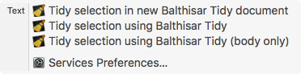

Balthisar Tidy
Balthisar Tidy uses standard Mac OS X menus that an experienced or novice user should find self-explanatory. The menu items’ descriptions below are limited to the features unique to Balthisar Tidy.
The application menu is a completely standard Macintosh application menu. Because you’re using a version of Balthisar Tidy from the balthisar.com website, you get one extra feature: Check for updates… will perform an automatic check for a new version of Balthisar Tidy, and if you want to, Balthisar Tidy will even update itself.
Balthisar Tidy also offers one or more System Services that can be accessed via the Services submenu, as shown here.

This menu with Balthisar Tidy’s Services are available in other applications for use there. This lets you do things such as Tidy text using Balthisar Tidy within, e.g., BBEdit without leaving BBEdit.